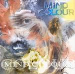

| Artist: | Mind Colour |
| Title: | Mind Colour |
| Label: | North Wind Records NW-CD 007 |
| Length(s): | 66 minutes |
| Year(s) of release: | 2002 |
| Month of review: | [08/2002] |
| 1) | The Illusionist Baron | 5.52 |
| 2) | Black Hole | 5.33 |
| 3) | Obsessions Of Remorse | 8.15 |
| 4) | Scent Of Life | 8.04 |
| 5) | The Master | 5.38 |
| 6) | Mind Colour | 7.12 |
| 7) | Keraton Fortress | 4.23 |
| 8) | The Queen Of Silence | 7.49 |
| 9) | The Sparrow-minister | 7.04 |
| 10) | Infinite Horizon | 5.45 |
Black Hole is a bit more subdued, with a bit of an underbelly feeling. As the track progresses, though, it does tend to open up a bit, sounding more clear, with some fresh sounding keyboards and a guitar solo, although somewhat obligatory.
Obsession Of Remorse starts ballad-like, with gentle keys and vocals, but burst loose into something far less subtle after a minute and a half. Despite the heavy keys and at times nice riffs, the track moves into a distinct hard rock feel I could have done without, to be pulled out by the intermezzo like bridge. This Obsession is one of those unfortunate combinations between strong and rather plain sections.
Scent Of Life is that well crafted composition that its predecessor initially appeared to be. The slow intro moves into a stronger and more up tempo main section, that after an intermezzo leads into a strong closing. Unfortunately De Lucia's voice once again falls short of the intensions.
The Master is a pretty traditional prog metal track, keys, riffs and voice, but nothing special. The instrumental section has some nice off key pianos and chanting, though. @3:30
Title track Mind Colour starts with whispered vocals and nice keys, but unfortunately turns into a far more straight forward dish rather soon, at times even using the shouted back ground vocals popular in the mid eighties.
Keraton Fortress starts with sparkling keys, but at the end of the day is a pretty straight forward rock track.
The Queen Of Silence has a well crafted intro, in which all instrumentalists get to show what they're about. And as does the track, the craftmanship continues. One of the better offerings.
In the Sparrow-minister De Lucia manages to control his voice better than in the other tracks. Combined with the nice interchange of slow and mid tempo elemenents, this makes for one of the better tracks of the album.
Closer Infinite Horizon is a pretty nice up tempo track, nothing special, but going down quite easily. The best tracks were kept for last, apparently.